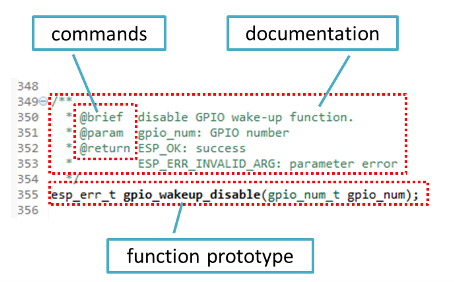
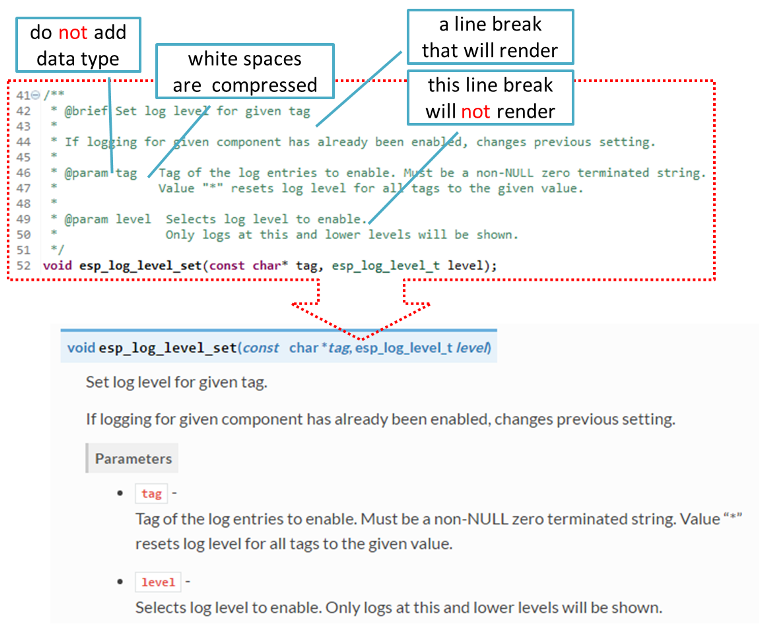
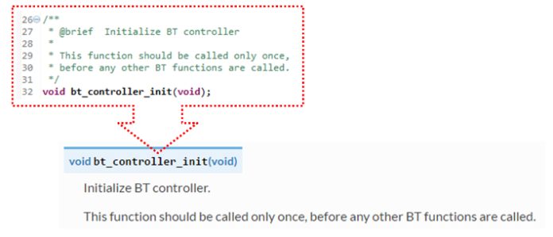

კოდის დოკუმენტირება¶
ამ აღწერილობის მიზანია, მოკლედ შეჯამდეს გამოყენებული დოკუმენტაციის სტილი. ესპრესიფიკაცია/ესპ-იდფ საცავი და როგორ დავამატოთ ახალი დოკუმენტაცია.
შესავალი¶
ამ რეპოზიტორიის კოდის დოკუმენტირებისას, გთხოვთ, დაიცვათ დოქსიგენის სტილითქვენ ამას აკეთებთ, მაგალითად, სპეციალური ბრძანებების ჩასმით @param, სტანდარტულ კომენტარების ბლოკებში, მაგალითად:
/**
* @param ratio this is oxygen to air ratio
*/
Doxygen წერს კოდს, იღებს ბრძანებებს შემდგომ ტექსტთან ერთად და მისგან ამზადებს დოკუმენტაციას.
ფუნქციის დოკუმენტაციის შემცველი ტიპიური კომენტარის ბლოკი ქვემოთ გამოიყურება.
Doxygen მხარს უჭერს რამდენიმე ფორმატირების სტილს. ის ასევე გაძლევთ დიდ მოქნილობას დოკუმენტაციაში ჩასართავად დეტალების დონეზე. ხელმისაწვდომი ფუნქციების გასაცნობად, გთხოვთ, შეამოწმოთ მონაცემებით მდიდარი და ძალიან კარგად ორგანიზებული. დოქსიგენის სახელმძღვანელო.
რატომ გვჭირდება ის?¶
საბოლოო მიზანია იმის უზრუნველყოფა, რომ ყველა კოდი თანმიმდევრულად იყოს დოკუმენტირებული, რათა შევძლოთ ისეთი ინსტრუმენტების გამოყენება, როგორიცაა სფინქსი და სუნთქვა კოდის შეცვლისას, API დოკუმენტაციის მომზადებისა და ავტომატური განახლებების დასახმარებლად.
ამ ხელსაწყოებით ზემოთ მოცემული კოდის ნაწილი შემდეგნაირად გამოიყურება:

წადი!¶
ამ რეპოზიტორისთვის კოდის წერისას, გთხოვთ, დაიცვათ ქვემოთ მოცემული ინსტრუქციები.
კოდის ყველა საშენი ბლოკის დოკუმენტირება მოახდინეთ: ფუნქციები, სტრუქტურები, typedefs, enums, მაკროები და ა.შ. მოგვაწოდეთ საკმარისი ინფორმაცია დოკუმენტირებული ელემენტების დანიშნულების, ფუნქციონალურობისა და შეზღუდვების შესახებ, რადგან გსურთ, რომ ისინი დოკუმენტირებული იყოს სხვების მიერ კოდის წაკითხვისას.
ფუნქციის დოკუმენტაცია უნდა აღწერდეს, თუ რას აკეთებს ეს ფუნქცია. თუ ის იღებს შეყვანის პარამეტრებს და აბრუნებს გარკვეულ მნიშვნელობას, ყველა მათგანი უნდა იყოს ახსნილი.
პარამეტრის წინ ან ინტერვალების გარდა სხვა სიმბოლოების დამატება მონაცემთა ტიპის გარეშე არ შეიძლება. ყველა ინტერვალი და ხაზის გადასვლები ერთ ინტერვალად არის შეკუმშული. თუ ხაზის გაწყვეტა გსურთ, ორჯერ გაჭერით.
თუ ფუნქციას აქვს void შეყვანა ან არ აბრუნებს რაიმე მნიშვნელობას, მაშინ გამოტოვეთ
@paramან@returnდოკუმენტირებისას,
defineასევე წევრებიstructანenum, თითოეული წევრის შემდეგ განათავსეთ კონკრეტული კომენტარი, როგორც ქვემოთ მოცემულია.
კარგად ფორმატირებული სიების შესაქმნელად, ბრძანების შემდეგ ხაზი გაწყვიტეთ (მაგალითად
@returnქვემოთ მოცემულ მაგალითში).* * @return * - ESP_OK if erase operation was successful * - ESP_ERR_NVS_INVALID_HANDLE if handle has been closed or is NULL * - ESP_ERR_NVS_READ_ONLY if handle was opened as read only * - ESP_ERR_NVS_NOT_FOUND if the requested key doesn't exist * - other error codes from the underlying storage driver *
დოკუმენტირებული სათაურის ფაილის ან ბიბლიოთეკის შემადგენელი ფაილების ჯგუფის ფუნქციონალურობის მიმოხილვა უნდა განთავსდეს იმავე დირექტორიაში, ცალკეულ დირექტორიაში.
README.rstფაილი. თუ დირექტორია შეიცავს სხვადასხვა API ის სათაურის ფაილებს, მაშინ ფაილის სახელი უნდა იყოსapiname-readme.rst.
კიდევ ერთი დამატებითი მილი გაიარეთ¶
არსებობს რამდენიმე რჩევა, თუ როგორ შეგიძლიათ თქვენი დოკუმენტაცია კიდევ უფრო უკეთესი და მკითხველისთვის უფრო სასარგებლო გახადოთ.
დაამატეთ კოდის ფრაგმენტები იმპლემენტაციის საილუსტრაციოდ. ამისათვის, ჩასვით ფრაგმენტი
@code{c}და@endcodeბრძანებები.* * @code{c} * // Example of using nvs_get_i32: * int32_t max_buffer_size = 4096; // default value * esp_err_t err = nvs_get_i32(my_handle, "max_buffer_size", &max_buffer_size); * assert(err == ESP_OK || err == ESP_ERR_NVS_NOT_FOUND); * // if ESP_ERR_NVS_NOT_FOUND was returned, max_buffer_size will still * // have its default value. * @endcode *
კოდის ფრაგმენტი უნდა იყოს ჩასმული იმ ფუნქციის კომენტარის ბლოკში, რომელსაც ის ასახავს.
მნიშვნელოვანი ინფორმაციის ხაზგასასმელად გამოიყენეთ ბრძანება
@attentionან@note.* * @attention * 1. This API only impact WIFI_MODE_STA or WIFI_MODE_APSTA mode * 2. If the ESP32 is connected to an AP, call esp_wifi_disconnect to disconnect. *
ზემოთ მოცემული მაგალითი ასევე გვიჩვენებს, თუ როგორ გამოვიყენოთ დანომრილი სია.
მსგავსი ფუნქციების ჯგუფის საერთო აღწერილობის მისაწოდებლად, ისინი ჩასვით შემდეგი გამოყენებით:
/**@{*/და/**@}*/მარკირების ბრძანებები:/**@{*/ /** * @brief common description of similar functions * */ void first_similar_function (void); void second_similar_function (void); /**@}*/
პრაქტიკული მაგალითისთვის იხილეთ nvs_ ფლეშ მეხსიერება /include/nvs.h.
შეიძლება კიდევ უფრო შორს წასვლა და ზოგიერთი კოდის გამოტოვება მოგინდეთ, მაგალითად, განმეორებადი განსაზღვრებები ან ჩამოთვლები. ასეთ შემთხვევაში, კოდი ჩასვით შიგნით.
/** @cond */და/** @endcond */ბრძანებები. ასეთი განხორციელების მაგალითი მოცემულია დრაივერი/ინკლუზია/დრაივერი/gpio.h.გამოიყენეთ markdown, რათა თქვენი დოკუმენტაცია კიდევ უფრო იკითხებოდეს. თქვენ დაამატებთ სათაურებს, ბმულებს, ცხრილებს და სხვა.
* * [ESP32 Technical Reference Manual](https://espressif.com/sites/default/files/documentation/esp32_technical_reference_manual_en.pdf) *
შენიშვნა
კოდის ფრაგმენტები, შენიშვნები, ბმულები და ა.შ. დოკუმენტაციაში არ მოხვდება, თუ ისინი არ არის ჩასმული დოკუმენტირებული ობიექტებიდან ერთ-ერთთან დაკავშირებულ კომენტარების ბლოკში.
- მოამზადეთ ერთი ან მეტი სრული კოდის მაგალითი აღწერასთან ერთად. მოათავსეთ აღწერა ცალკე ფაილში.
README.mdკონკრეტულ საქაღალდეში, მაგალითები დირექტორია.
დაკავშირების მაგალითები¶
GitHub-ზე მაგალითებზე ბმულების დადებისას არ გამოიყენოთ აბსოლუტური/მყარად კოდირებული URL-ები. ამის ნაცვლად, გამოიყენეთ docutils-ის მორგებული როლები, რომლებიც თქვენთვის ბმულებს გენერირებენ. ეს ავტომატურად გენერირებული ბმულები მიუთითებს რეპოზიტორის git commit ID-ის (ან თეგის) ხეზე ან blob-ზე. ეს საჭიროა იმისათვის, რომ ბმულები არ გაფუჭდეს მასტერ განშტოებაში ფაილების გადაადგილების ან წაშლისას.
შემდეგი როლებია გათვალისწინებული:
:idf:`path`- მიუთითებს ESP-IDF შიგნით არსებულ დირექტორიაზე:idf_file:`path`- ESP-IDF შიგნით შესატანი წერტილები:idf_raw:`path`- მიუთითებს ფაილის ნედლ ხედზე ESP-IDF ში:component:`path`- მიუთითებს დირექტორიაზე ESP-IDF კომპონენტი s dir-ში:component_file:`path`- ESP-IDF კომპონენტი s dir-ში ფაილის ჩასაწერად წერტილები:component_raw:`path`- მიუთითებს ფაილის ნედლ ხედზე ESP-IDF კომპონენტი s dir-ში:example:`path`- მიუთითებს ESP-IDF examples dir-ის შიგნით არსებულ დირექტორიაზე:example_file:`path`- ESP-IDF examples dir-ში ფაილის შესატანი წერტილები:example_raw:`path`- მიუთითებს ფაილის ნედლ ხედზე ESP-IDF examples dir-ში
განხორციელების მაგალითი:
* :example:`get-started/hello_world`
* :example:`Hello World! <get-started/hello_world>`
როგორ გამოისახება:
CI აწყობის სკრიპტს ემატება შემოწმება, რომელიც RST ფაილებს ეძებს მყარი კოდირებული ბმულების არსებობას (რომლებიც იდენტიფიცირებულია URL-ის ხე/მასტერი, blob/მასტერი ან raw/master ნაწილით). ეს შემოწმება შეიძლება შესრულდეს ხელით: cd docs და შემდეგ make gh-linkcheck.
ენის ვერსიების დაკავშირება¶
სხვადასხვა ენაზე დოკუმენტაციას შორის გადართვა შესაძლებელია გამოყენებით :link_to_translation: მორგებული როლი. დოკუმენტაციის გვერდზე განთავსებული როლი პარამეტრად მითითებულ ენაზე იმავე გვერდზე ბმულს იძლევა. ქვემოთ მოცემული მაგალითები გვიჩვენებს, თუ როგორ შეიყვანოთ ბმულები დოკუმენტაციის ჩინურ და ინგლისურ ვერსიებზე:
:link_to_translation:`zh_CN:中文版`
:link_to_translation:`en:English`
ენა მითითებულია სტანდარტული აბრევიატურების გამოყენებით, როგორიცაა en ან zh_CNბოლო წერტილ-მძიმის შემდეგ ტექსტი არ არის სტანდარტიზებული და შეიძლება შეიყვანოთ იმ კონტექსტიდან გამომდინარე, სადაც ბმული არის განთავსებული, მაგ.:
:link_to_translation:`en:see description in English`
ილუსტრაციების დამატება¶
განიხილეთ დიაგრამებისა და სურათების დამატება აღწერილი ცნებების საილუსტრაციოდ.
ზოგჯერ უკეთესია ილუსტრაციის დამატება, ვიდრე გრძელი აბზაცის დაწერა რთული იდეის, მონაცემთა სტრუქტურის ან ალგორითმის აღსაწერად. ეს საცავი იყენებს ბლოკდიაგნოსტიკა ინსტრუმენტების ნაკრები მარტივი ტექსტური ფაილებიდან დიაგრამების გენერირებისთვის.
მხარდაჭერილია შემდეგი ტიპის დიაგრამები:
ამ ინსტრუმენტების ნაკრებით შესაძლებელია მარტივი ტექსტის ფორმატიდან (graphviz-ის DOT ფორმატის მსგავსი) ლამაზი დიაგრამის სურათების გენერირება. დიაგრამის ელემენტები ავტომატურად განლაგდება. შემდეგ დიაგრამის კოდი გარდაიქმნება „.png“ გრაფიკად და ინტეგრირდება „კულისებში“ სფინქსი დოკუმენტები.
დიაგრამის შესაქმნელად შეგიძლიათ გამოიყენოთ ონლაინ ინტერაქტიული გარსი რომელიც მყისიერად აჩვენებს რენდერირებულ სურათს.
ქვემოთ მოცემულია დიაგრამის რამდენიმე მაგალითი:
- მარტივი ბლოკ-დიაგრამა /
blockdiag- Wi-Fi ბუფერის კონფიგურაცია - ოდნავ უფრო რთული ბლოკ-დიაგრამა - Wi-Fi პროგრამირების მოდელი
- თანმიმდევრობის დიაგრამა /
seqdiag- ყველა არხში კონკრეტული წვდომის წერტილის სკანირება - პაკეტის დიაგრამა /
packetdiag- NVS გვერდის სტრუქტურა
სცადეთ ისინი საწყისი კოდის შეცვლით და იხილეთ ქვემოთ მოცემული დიაგრამა მყისიერად.
შენიშვნა
შესაძლოა, გამოყენებული შრიფტის რენდერში მცირედი განსხვავებები იყოს. ინტერაქტიული გარსი esp-idf დოკუმენტაციაში გამოყენებულ შრიფტთან შედარებით.
შენიშვნების დამატება¶
დოკუმენტზე მუშაობისას შეიძლება დაგჭირდეთ:
- გააკეთეთ რამდენიმე წინადადება, თუ რა უნდა დაემატოს ან შეიცვალოს მომავალში.
- დატოვეთ შეხსენება საკუთარი თავისთვის ან სხვისთვის, რომ გააგრძელოთ.
ამ შემთხვევაში, დაამატეთ todo შენიშვნა თქვენს reST ფაილს დირექტივის გამოყენებით .. todo::მაგალითად:
.. todo::
Add a package diagram.
თუ დაამატებთ .. todolist:: reST ფაილში დირექტივა შეიცვლება მთელი დოკუმენტაციიდან ყველა შესასრულებელი შენიშვნის სიით.
ნაგულისხმევად, დირექტივები .. todo:: და .. todolist:: დოკუმენტაციის შემქმნელები უგულებელყოფენ მათ. თუ გსურთ, რომ შენიშვნები და შენიშვნების სია ხილული იყოს თქვენს ლოკალურად შექმნილ დოკუმენტაციაში, გააკეთეთ შემდეგი:
- გახსენით თქვენი ადგილობრივი
conf_common.pyფაილი. - პარამეტრის პოვნა
todo_include_todos. - შეცვალეთ მისი მნიშვნელობა
FalseრომTrue.
ცვლილებების საწყის ველში გადატანამდე, გთხოვთ, დააყენოთ მნიშვნელობა todo_include_todos უკან False.
გაფართოების შესახებ დამატებითი ინფორმაციისთვის იხილეთ სფინქსი.ექსტ.ტოდო დოკუმენტაცია.
ყველაფერი ერთად შეკრიბეთ¶
დოკუმენტაციის მომზადების შემდეგ, მიჰყევით ინსტრუქციას API დოკუმენტაციის შაბლონი და შექმენით ერთი ფაილი, რომელიც გააერთიანებს მომზადებული დოკუმენტაციის ყველა ცალკეულ ნაწილს. და ბოლოს, დაამატეთ ბმული ამ ფაილზე შესაბამის .. toctree:: ში index.rst ფაილი, რომელიც მდებარეობს /docs საქაღალდე ან ქვესაქაღალდეები.
კარგი, მაგრამ სფინქსის ახალი წევრი ვარ!¶
არ ინერვიულოთ. ყველა საჭირო პროგრამული უზრუნველყოფა კარგად არის დოკუმენტირებული. ის ასევე ღია კოდისა და უფასოა. დაიწყეთ შემოწმებით სფინქსი დოკუმენტაცია. თუ არ იცით, როგორ დაწეროთ პირველი მარკირების ენის გამოყენებით, იხილეთ გადასტრუქტურირებული ტექსტის პრაიმერიასევე შეგიძლიათ გამოიყენოთ markdown (.md) ფაილები და მეტი გაიგოთ ჩვენს მიერ გამოყენებული markdown სინტაქსის შესახებ Recommonmark parser-ის დოკუმენტაციის გვერდზე.https://recommonmark.readthedocs.io/en/latest/>`_.
შეამოწმეთ ამ დოკუმენტაციის საწყისი ფაილები, რათა გაიგოთ, რა იმალება ეკრანზე ახლა ნაჩვენები ინფორმაციის უკან. წყაროები ინახება GitHub-ზე ესპრესიფიკაცია/ესპ-იდფ საცავი დოკუმენტები საქაღალდე. თქვენ შეგიძლიათ პირდაპირ გადახვიდეთ ამ გვერდის საწყის ფაილზე ზედა მარჯვენა კუთხეში ბმულზე გადახვევით. GitHub-ზე ყოფნისას, ნახეთ, რა არის სინამდვილეში შიგნით, გახსენით საწყის ფაილებს დაწკაპუნებით
Rawღილაკი.GitHub-ზე გამოქვეყნებამდე, სავარაუდოდ, მოგინდებათ ნახოთ, თუ როგორ იქმნება და გამოიყურება დოკუმენტაცია. ამის გაკეთების ორი ვარიანტი არსებობს:
- ინსტალაცია სფინქსი, სუნთქვა, ბლოკდიაგნოსტიკა და დოქსიგენი ლოკალურად ასაშენებლად იხილეთ ქვემოთ მოცემული თავი.
- ანგარიშის შექმნა წაიკითხეთ დოკუმენტები და შექმენით დოკუმენტაცია ღრუბელში. Read the Docs გთავაზობთ დოკუმენტების შექმნას და ჰოსტინგს უფასოდ და მათი სერვისი ძალიან სწრაფად და შესანიშნავად მუშაობს.
დოკუმენტაციის შესაქმნელად, შექმნამდე, გამოიყენეთ ამაღლებული ტექსტი რედაქტორთან ერთად OmniMarkup-ის წინასწარი გადახედვა დანამატი.
შენობის დოკუმენტაციის ადგილობრივად დაყენება¶
თქვენ შეგიძლიათ დააყენოთ გარემო დოკუმენტაციის ლოკალურად შესაქმნელად თქვენს კომპიუტერზე შემდეგი ინსტალაციით:
- დოქსიგენი - https://www.stack.nl/~dimitri/doxygen/
- სფინქსი - https://github.com/sphinx-doc/sphinx/#readme-for-sphinx
- სუნთქვა - https://github.com/michaeljones/breathe#breathe
- დოკუმენტის თემა „sphinx_rtd_theme“ - https://github.com/rtfd/sphinx_rtd_theme
- მორგებული 404 გვერდი „sphinx-notfound-page“ - https://github.com/rtfd/sphinx-notfound-page
- ბლოკდიაგნოსტიკა - http://blockdiag.com/en/index.html
- რეკომონმარკი - https://github.com/rtfd/recommonmark
პაკეტი „sphinx_rtd_theme“ დამატებულია იგივე „იდეისა და შეგრძნების“ მისაღებად. ESP32 პროგრამირების სახელმძღვანელო დოკუმენტაცია, როგორიცაა „Read the Docs“-ის ჰოსტინგის საიტზე.
ნუ ინერვიულებთ, თუ რამდენიმე პაკეტის ინსტალაცია მოგიწევთ. Doxygen-ის გარდა, ყველა დარჩენილი პაკეტი Python-შია დაწერილი. ამიტომ, ყველა მათგანის ინსტალაცია ერთ მარტივ ნაბიჯად არის გაერთიანებული.
Doxygen-ის ინსტალაცია დამოკიდებულია ოპერაციულ სისტემაზე:
Linux
sudo apt-get install doxygen
Windows - ინსტალაცია MSYS2 კონსოლში
pacman -S doxygen
MacOS
brew install doxygen
შენიშვნა
თუ ინსტალაციას Windows სისტემაზე ახორციელებთ (Linux-ის და MacOS-ის მომხმარებლებმა ეს შენიშვნა უნდა გამოტოვონ), ადრე შემდგომი ნაბიჯების შესასრულებლად, შეასრულეთ ქვემოთ მოცემული ორი დამატებითი ნაბიჯი. ეს ნაბიჯები საჭიროა „blockdiag“-ის დამოკიდებულებების დასაინსტალირებლად, რომლებიც განხილულია ქვემოთ. ილუსტრაციების დამატება.
განაახლეთ ყველა სისტემის პაკეტი:
$ pacman -Syu
ეს პროცესი, სავარაუდოდ, მოითხოვს MSYS2 MINGW32 კონსოლის გადატვირთვას და ზემოთ მოცემული ბრძანებების გამეორებას განახლების დასრულებამდე.
ინსტალაცია ბალიში, ეს ერთ-ერთი დამოკიდებულებაა ბლოკდიაგნოსტიკა:
$ pacman -S mingw32/mingw-w64-i686-python2-pillow
შეამოწმეთ ეკრანზე არსებული ჟურნალი, რომელიც
mingw-w64-i686-python2-pillow-4.3.0-1დაინსტალირებულია. წინა ვერსიები ბალიში არ იმუშავებს.
Windows-ის ინსტალაციის ნაკლი ის არის, რომ შრიფტები blockdiag pictures <add-illustrations> თუ სწორად არ გამოისახება, მის ნაცვლად შემთხვევით სიმბოლოებს დაინახავთ. სანამ ეს პრობლემა არ მოგვარდება, შეგიძლიათ გამოიყენოთ ინტერაქტიული გარსი რომ ნახოთ, როგორ გამოიყურება სრული სურათი.
ყველა დარჩენილი აპლიკაციაა პითონი პაკეტები და შეგიძლიათ დააინსტალიროთ ისინი ერთი ნაბიჯით შემდეგნაირად:
cd ~/esp/esp-idf/docs
pip install --user -r requirements.txt
შენიშვნა
ინსტალაციის ნაბიჯები ვარაუდობენ, რომ ESP-IDF მოთავსებულია ~/esp/esp-idf დირექტორია, რომელიც დოკუმენტაციაში გამოყენებული ESP-IDF ის ნაგულისხმევი მდებარეობაა.
კონკრეტული ენის ფაილების მქონე დირექტორიაში გადასვლა:
cd en
ახლა თქვენ მზად უნდა იყოთ დოკუმენტაციის შესაქმნელად შემდეგი ბრძანების გამოძახებით:
make html
ამას შეიძლება რამდენიმე წუთი დასჭირდეს. დასრულების შემდეგ, დოკუმენტაცია განთავსდება ~/esp/esp-idf/docs/en/_build/html საქაღალდე. მის სანახავად გახსენით index.html ვებ ბრაუზერში.
შეფუთეთ¶
ჩვენ გვიყვარს კარგი კოდი, რომელიც მაგარ რაღაცეებს აკეთებს. კიდევ უფრო მეტად გვიყვარს, თუ ის კარგად არის დოკუმენტირებული, რათა სწრაფად გავუშვათ და ასევე გავაკეთოთ მაგარი რაღაცეები.
განაგრძეთ, თქვენი კოდი და დოკუმენტაცია შეიტანეთ!